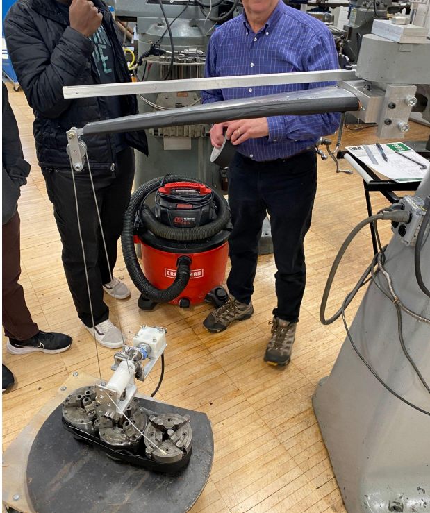
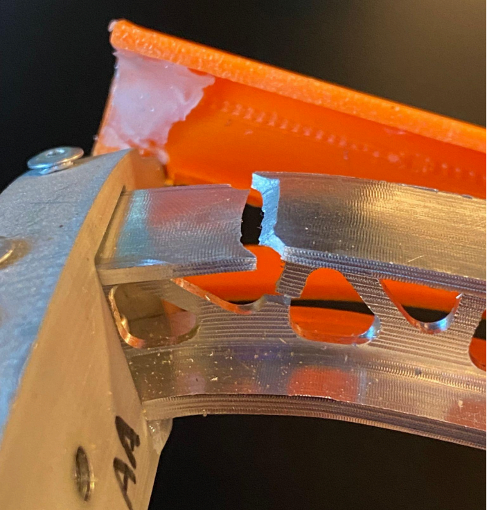

The test consited of place six increasing loads (65, 90, 115, 140, 165, and 180 in lbs) on the end of the beam. To pass the test the beam
must hold 90lbs without fracture or plastic deformation. Our final beam weighted in at 1 lb, 3.9 oz and under the 90lb load had a deflection
of 3.25" and once remvoed returned to its orginal shape. As the laod increased the beam began to plastically deform, ultimately fracturing at
180lbs. Ultimately, the beam deflection was relatively consistent with what the simulations predicted, with bending being distributed along
the length of the beam. The beam fractured near the fixed support, which is consistent with the fact that the moment at the fixed support
is largest and thus produces the highest normal stresses. Since aluminum is a ductile material, it first began to neck and finally fractured
in the direction of the highest shear stresses, which arise from normal stresses when the coordinate system is rotated by 45 degrees. Tensile
stresses reached a yield criterion first, as the beam did not buckle significantly.


Photo Descriptions: The photo of the left shows the beam in the testing apparatus and subjected to the 90lb load. The photo on the right shows the
break caused by the 180lb load.